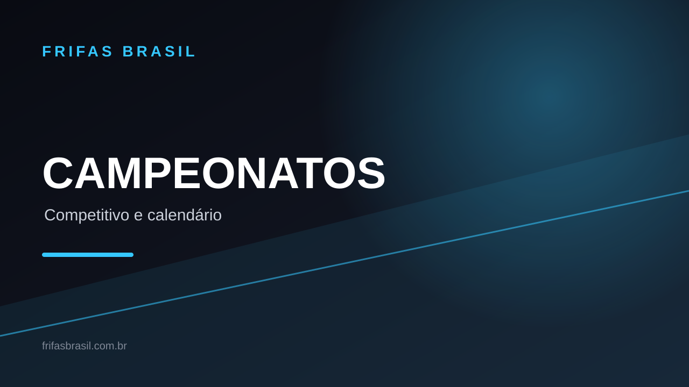

Storm Arena começou no Free Fire: veja os recursos e o calendário do FFWS 2026
A campanha temática foi anunciada pela Garena em 4 de novembro e começou em 6 de novembro, junto à abertura do FFWS Global Finals 2026, em Bangkok. A programação competitiva segue até 28 de novembro.

O que é a Storm Arena?
Storm Arena é uma campanha global de Free Fire criada para acompanhar o FFWS Global Finals 2026. O anúncio oficial descreve uma experiência temática com interface inspirada em tempestades, missões dentro do jogo e recursos especiais nos modos Battle Royale e Contra Squad.
No Battle Royale, a campanha inclui apresentação visual temática no início das partidas, elementos de cenário relacionados ao campeonato e um sistema que destaca esquadrões com melhor desempenho. Os grupos em evidência podem receber airdrops especiais da campanha.
No Contra Squad, o destaque anunciado é o Prime MVP Showcase, com painéis de MVP, estatísticas personalizadas e comparações entre jogadores. A área de início das partidas, a loja e as caixas de recompensa também recebem identidade visual temática.
Missões e progressão
A Garena anunciou uma trilha de reputação com cinco etapas: First Time, Big Time, Show Time, Peak Time e Prime Time. O progresso é associado ao desempenho nas partidas e libera cartões de jogador em níveis diferentes.
O comunicado também informa a existência de itens cosméticos e recompensas gratuitas vinculadas à campanha e a atividades do mundial. A disponibilidade de cada item pode variar conforme o evento e a conta; por isso, confira as tarefas, os requisitos e o prazo diretamente na área de eventos do jogo antes de contar com uma recompensa.
Calendário oficial do FFWS Global Finals 2026
O mundial acontece em Bangkok, na Tailândia, de 6 a 28 de novembro. A edição reúne 24 equipes e tem premiação total anunciada de US$ 1,2 milhão. A final está marcada para 28 de novembro, no BITEC LIVE.
- Fase eliminatória 1 — 6 a 15 de novembro: as 24 equipes disputam partidas em formato todos contra todos; as quatro últimas colocadas são eliminadas após essa etapa.
- Fase eliminatória 2 — 19 a 22 de novembro: 12 equipes competem, com duas equipes avançando por dia conforme o formato anunciado.
- Última chance — 27 de novembro: 12 equipes disputam as quatro vagas restantes na Grande Final.
- Grande Final — 28 de novembro: decisão no formato Champion Rush, sem limite de partidas anunciado no comunicado.
O que isso significa para quem acompanha do Brasil?
O calendário confirma três vagas destinadas ao Brasil entre as 24 equipes. A distribuição das vagas, por si só, não informa resultados de partidas nem a classificação atual de cada equipe. Para evitar publicar tabela desatualizada, esta matéria não atribui posições ou resultados sem uma atualização verificável.
Os horários de transmissão podem depender da plataforma e da programação regional. Consulte a programação publicada pelos canais oficiais antes de organizar sua audiência.
O que está confirmado e o que pode mudar
Estão confirmados no anúncio da Garena: início da Storm Arena em 6 de novembro; realização do FFWS Global Finals em Bangkok entre 6 e 28 de novembro; participação de 24 equipes; premiação total de US$ 1,2 milhão; e as quatro etapas do calendário descritas acima.
Recompensas individuais, tarefas disponíveis para cada conta, horários de transmissão e resultados esportivos devem ser conferidos nas respectivas telas e comunicados atualizados. O FRIFAS BRASIL não trata previsões ou relatos de terceiros como confirmação oficial.
Base factual: comunicado oficial da Garena sobre a campanha Storm Arena e o FFWS Global Finals 2026, publicado em 4 de novembro de 2026. Texto reescrito e contextualizado pela Equipe FRIFAS BRASIL.